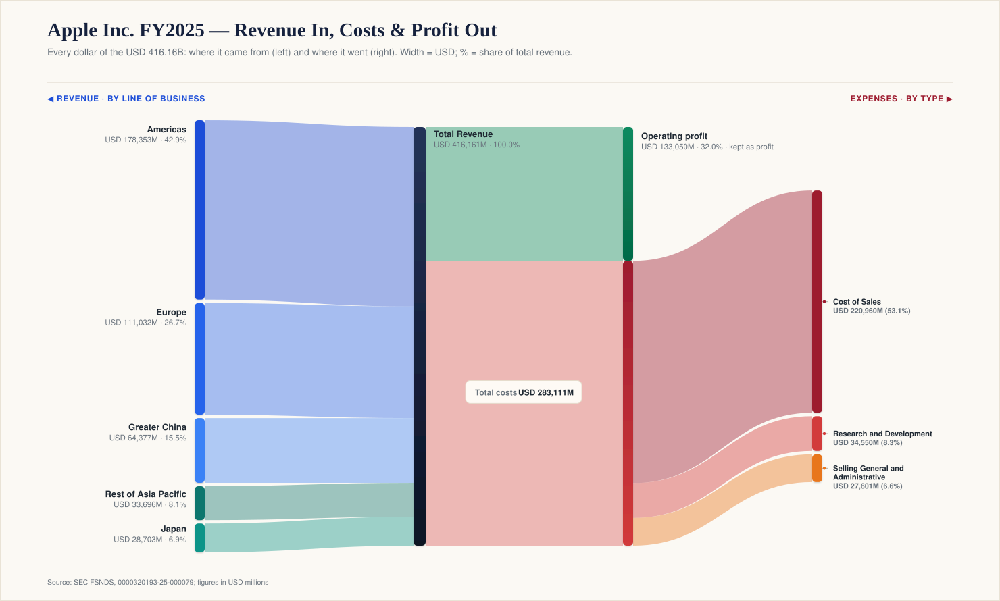
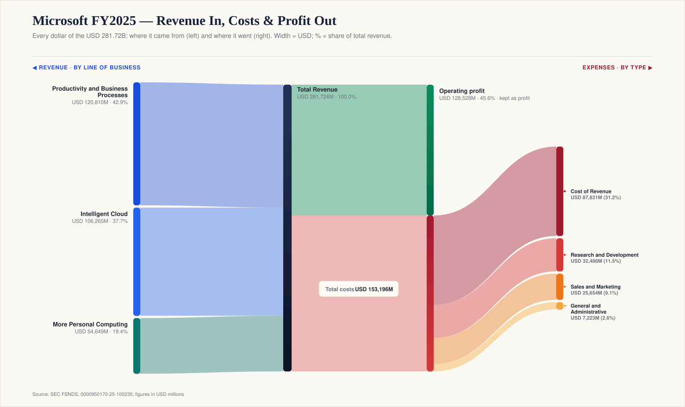
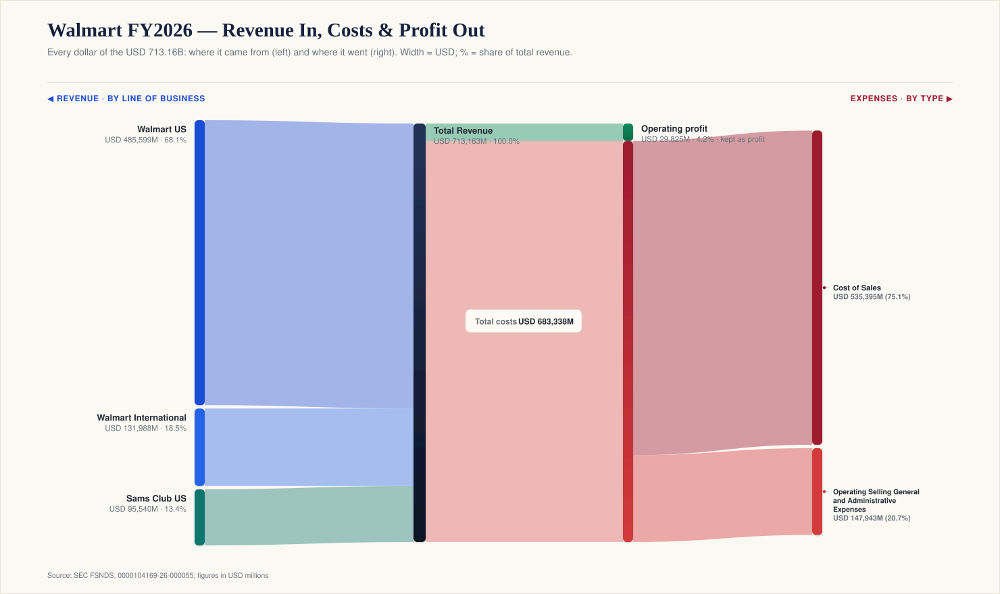
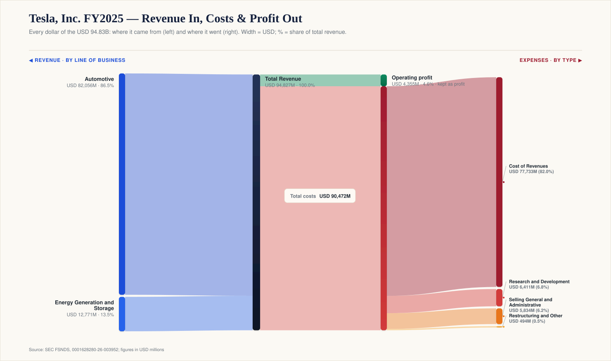
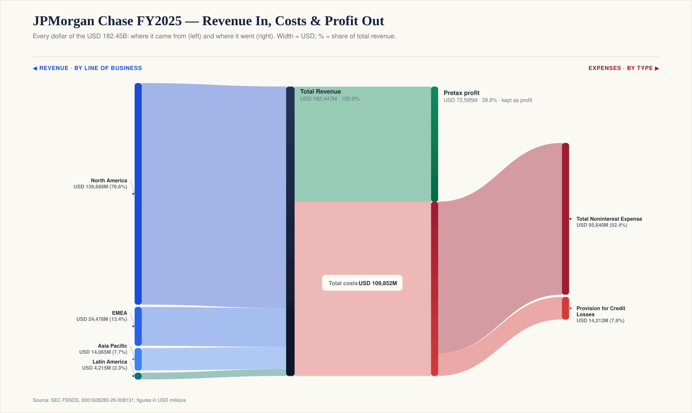
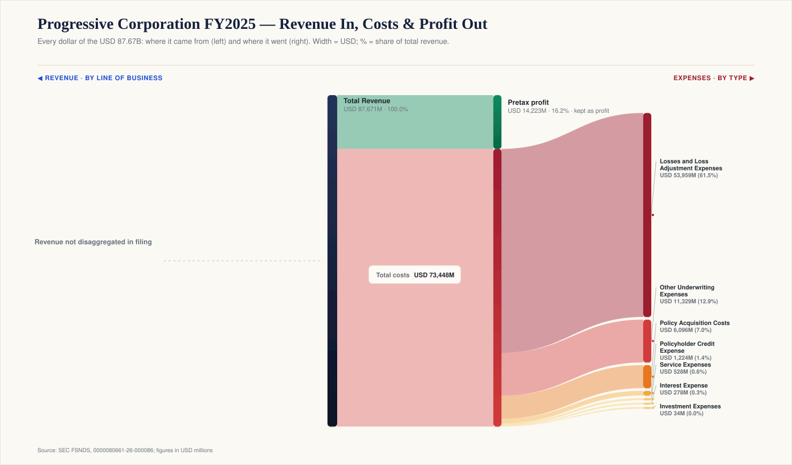

The physics of a revenue dollar
Every company reports revenue in the same unit: dollars. But a revenue dollar is not always the same kind of dollar.
A Microsoft dollar is largely a software and cloud dollar. An Apple dollar begins as hardware but opens onto services. A Walmart dollar is an inventory dollar — thin but fast. A Tesla dollar is still mostly a manufacturing dollar, even as the company's narrative points toward AI, autonomy, and software. A JPMorgan dollar is a spread dollar, already net of funding cost. A Progressive dollar is a premium dollar — money collected before the final cost of claims is known.
This is a small visual experiment built from public filing data. Each chart follows one dollar of reported revenue: where it appears on the left, where it is spent on the right, and what remains as profit. The result is not a valuation model and not an investment ranking. It is closer to an X-ray — a way to see the shape of a business model through the income statement.
The deeper question is not only "how much profit survives?" It is: what kind of dollar entered the machine in the first place?
Width is dollars. On the left is reported revenue. On the right, the green block is what survives as profit; the red blocks are the expenses required to produce, distribute, service, finance, or insure that revenue.
But the chart is only the beginning. The same accounting word can hide very different economic realities. "Cost of revenue" means one thing for cloud software, another for cars, another for retail inventory. "Provision for credit losses" is not a factory cost; it is a bank's estimate of future credit pain. "Losses and loss adjustment expenses" are not operating overhead; they are the core product cost of an insurer.
The charts look comparable because accounting forces every business into rows. The businesses are different because their dollars obey different physics.

The most obvious lesson is that the top line tells you very little. Microsoft and Walmart both report enormous revenue. They are not remotely the same machine.

Microsoft turns about 45.6% of revenue into operating profit — roughly $128.5B of operating profit on $281.7B of revenue. This is the classic software pattern: once the platform, code, and distribution exist, the next dollar can arrive with far less incremental cost than a physical-product dollar.

Walmart, with about $713.2B of revenue and roughly $29.8B of operating profit, keeps about 4.2%. Cost of sales alone is about three-quarters of revenue. Read naively, this looks "worse." Economically it is a different design: low margin is part of the customer promise. The business is not about making each dollar thick — it is about making thin dollars move through the system with extraordinary speed and discipline.
Microsoft's power is margin. Walmart's power is velocity. And that distinction matters, because a business model is not only about how much profit is kept from each dollar. It is also about how much capital that dollar ties up, how fast it turns, and who funds the journey — things the income statement alone doesn't show. A high-margin business stretches each dollar vertically; a high-throughput business spins each dollar horizontally.
The real subject of these charts is not margin. It is control.
A company earns attractive economics when it controls something scarce: code, distribution, habit, logistics density, procurement scale, regulated balance-sheet capacity, underwriting data, brand, or a network of customers and developers. The income statement shows where that control appears.
Microsoft controls software platforms and cloud infrastructure. Apple controls the device relationship and the ecosystem around it. Walmart controls procurement, logistics, shelf space, and price perception. JPMorgan controls a regulated balance sheet and funding franchise. Progressive controls underwriting, pricing, and claims discipline.
Profit is not a substance that naturally flows out of revenue. Profit is what remains after everyone else with a claim on the dollar has been paid — suppliers, employees, landlords, cloud vendors, chipmakers, depositors, policyholders, regulators, and customers themselves. A business model is the shape of a company's bargaining power, expressed through accounting.
Apple is often described as a hardware company with a services business attached. The chart above suggests a stronger version: the hardware creates the installed base, and the installed base creates the right to earn higher-margin services revenue over time.
The device sale is visible immediately. The services layer — app commissions, advertising, cloud, support, payments, subscriptions — is more subtle, and it does not all behave like product revenue. Some of it is recurring; some is a platform toll; some is attached to a user relationship rather than a unit shipped. That is why Apple can sell physical products and still look unlike a normal hardware company: the device is a customer relationship with an operating system wrapped around it. Manufacturing at the front, ecosystem economics behind it.
Microsoft is the cleanest example of operating leverage in the set: revenue passes through cost of revenue, R&D, sales, and general expenses, and nearly half still survives as operating profit.
But even here the shape is changing. The old software miracle was that the second customer was almost free. The cloud version is different, and the AI version is more different still: the frontier of software is increasingly physical — chips, power, cooling, land, fiber, and data centers. The chart can't show capital intensity, but it reframes the question. For software, the issue is no longer only "does it scale?" It is "what does scaling now require?"
Tesla is mentally filed next to big tech. Its income statement still looks much more like manufacturing.

About 82% of revenue ($94.8B) is absorbed by cost of revenue ($77.7B), leaving roughly a 4.6% operating margin after R&D and SG&A. The largest red block is not sales, marketing, or R&D — it is the cost of building, delivering, servicing, warranting, and supporting physical products. Apple and Tesla both sell hardware, yet Apple keeps about a third of each dollar and Tesla under a twentieth. The difference is pricing power, product mix, and an ecosystem — not who is more "tech."
None of this disproves the AI-and-autonomy story. It simply shows what has not yet become the dominant income-statement reality. Today's Tesla dollar is mostly a car, energy, and services dollar; the bull case depends on whether more of it can become software, autonomy, or fleet economics. The chart doesn't settle that debate — it clarifies it. If Tesla is to be valued as a different kind of business, the difference eventually has to show up here.
Banks have a different grammar. For an industrial company, revenue appears before product cost. For a bank, a large part of revenue is already net of one of its most important costs: funding. The interest a bank earns is reported net of the interest it pays before it ever reaches a chart like this — so a bank's "revenue" dollar has already passed through the price of money.

After that netting, the bank still pays noninterest expenses, absorbs provisions for credit losses, and holds capital against risk. JPMorgan's total net revenue was about $182.4B, noninterest expense about $95.6B, the provision for credit losses about $14.2B (7.8% of revenue), and pretax profit about $72.6B — roughly 39.8%. A bank does not simply turn revenue into profit. It turns balance-sheet permission into spread, then spends provisions when the future looks less certain.
Insurance is stranger still. A manufacturer usually builds the product, knows its cost, and then sells it. An insurer sells the product first and learns the final cost later.

Progressive's largest expense is losses and loss adjustment expenses — the claims it pays and the cost of handling them — about $54.0B, or 61.5% of revenue. Profit (about 16.2% pretax) is the residual after risk is priced, claims are paid, and policies are acquired. Price the risk now, discover part of the cost later, and hope the pool behaves better than the price assumed.
The chart shows one more thing. Progressive's left side reads "revenue not disaggregated in filing." Sometimes the picture reveals the disclosure structure, not just the economics — what a company chooses to break out is itself information.
It is tempting to sort these companies by margin and declare a winner. That would miss the point. A 45.6% Microsoft operating margin, a 32.0% Apple operating margin, a 4.2% Walmart operating margin, a 4.6% Tesla operating margin, a 39.8% JPMorgan pretax margin, and a 16.2% Progressive pretax margin are not just different numbers. They are different species of number.
The profit line isn't even the same line in every chart. For Microsoft, Apple, Walmart, and Tesla, the chart uses operating profit. For JPMorgan and Progressive, pretax profit is more useful, because the operating structure of a bank or an insurer does not map neatly onto a standard industrial income statement. The categories do different jobs, too: what one company puts in "cost of sales," another reports in operating expense, so even gross margins aren't always comparable.
Accounting is not a neutral photograph of the business. It is a map drawn with rules, estimates, categories, and management choices. Sometimes the chart reveals the business; sometimes it reveals the accounting boundary around the business.
A note on comparability. These charts are descriptive, not valuation models. Different industries use different accounting categories, and the profit measure is not identical across companies. Read them as maps of business models, not as rankings of investment attractiveness — and not as investment advice.
The chart tells you how much of a dollar survived. A business model asks four deeper questions.
What kind of dollar is it? A software dollar, a hardware dollar, an inventory dollar, a spread dollar, and a premium dollar should not be read the same way.
How much capital does it require? A thin-margin retailer can throw off enormous cash if inventory turns quickly and suppliers help finance the system. A software company can look asset-light until AI and cloud infrastructure demand heavy investment. A bank's revenue requires regulatory capital; an insurer's requires reserves and an investment portfolio.
When does the cost become knowable? Walmart knows its cost of goods quickly. Tesla knows most product cost upfront but carries warranty and service obligations. JPMorgan provisions for future credit losses. Progressive prices policies before all the claims are known.
Why does the spread persist? Margins only matter if they are defensible — through brand, switching costs, procurement scale, logistics density, underwriting data, regulation, capital access, network effects, or simply execution.
Margin tells you how much survived. Capital tells you what had to be tied up. Time tells you when the cost becomes knowable. Control tells you why the spread exists at all.
These six companies are only a starting point. The underlying project builds one of these flows for every company in the S&P 500 from structured filing data, with the goal of being able to move across companies and industries interactively.
The risk in a project like this is false precision. SEC structured data is powerful, but the SEC itself notes that its Financial Statement and Notes Data Sets are meant to help analyze filing data and are not a substitute for the complete filings. So the charts should be read as maps, not answers. They simplify; they compress; they depend on accounting categories that vary by industry and company.
But maps are useful precisely because they compress. They show shape. And the shape matters, because accounting data is not just a scorecard of performance. It is a fossil record of business power: what a company can charge for, what it must pay away, what risks it carries, what capital it needs, and which costs it has managed to shrink, defer, or push somewhere else.
Top line is volume. Margin is survival. Business model is physics.